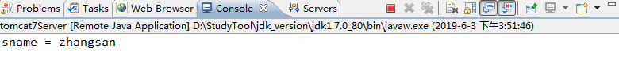
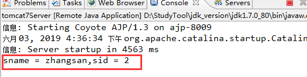
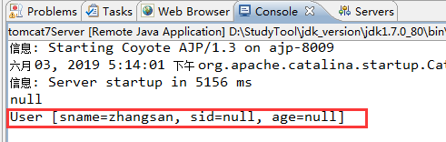
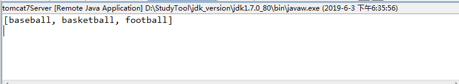

在之前我有写过关于struts2框架的博客，好像是写了三篇，但是之前写的内容仅仅是struts2的一些基础知识而已，struts2还有很多有趣的内容等待着我们去发掘。我准备再写几篇关于struts2的高级内容，之前的一些基础知识我就不会再提了，所以，在看进阶篇的struts2时，我希望你有一定的struts2框架的基础，没有的话也不要紧，因为入门struts2非常简单，随手看几篇博客就算入门了，但要想灵活运用它，我们就得付出大量的时间和精力，让我们为了共同的目标奋进吧。
那就先补充一些知识点，这些知识点在之前是没有提到过得。
<package name="demo" extends="struts-default" namespace="/">
<action name="hello" class="com.itcast.demo.HelloAction" method="">
<result name="ok">/index.jsp</result>
</action>
</package>这是struts.xml配置文件的一段配置，这段配置相信大家都能懂吧，不懂的话你就应该去补补课了。还是来解释一下吧，package元素可以把逻辑上相关的一组Action、Result、Intercepter等元素封装起来，形成一个独立的模块，package可以继承其他的package，也可以作为父包被其他的package继承，在上面的配置中，我们package标签配置了name属性为demo，这是模块的名称，名称是唯一的，然后是extends属性，这个属性如何理解，我们可以这样想，一个类继承了HttpServlet，它就成为了Servlet，那么我们的package也要继承struts-default，它才能起作用，然后是命名空间namespace。该属性值和action标签的name属性值共同构成访问路径。也就是说，我们在浏览器输入 /hello，即可访问到action标签配置的action类，如果namespace属性值为/demo，则访问路径变为 /demo/hello。
说到action，我们就来了解一下关于action的内容。在action标签中，需要配置class属性值，该属性值即是action类路径，这个类是用来处理逻辑的，也就是说，用户在访问一个网页地址时，会通过地址寻找对应的package，然后在package内寻找具体的action标签，当匹配到某个action时，struts框架就会寻找class属性值所对应的类，在action标签里还有一个method属性，它指定运行的方法，如果不配置method，默认执行execute()方法。还需要注意的是，如果在action标签中你没有配置result，程序是会报错的，除非你的方法返回值为none，你才可以不用配置result标签。
我们知道，action类需要继承ActionSupport，其实，要想实现action，我们有三种方式。
查看源码，我们知道ActionSupport实际上实现了一个Action接口，所以，我们也可以通过实现action接口来实现action类。
还有一种方式就是什么类也不继承，什么接口也不实现，这样的类也是可以成为action类的。
<!--
当action类的方法非常多时，相应的action配置也会很多，这时，我们可以通过通配符*进行统一配置
当action的name属性写为hello3_*的时候，我们访问所有关于hello3_的路径都会被action捕获，例如:hello3_update、hello3_add
而此时方法名也应该随着我们访问的路径进行改变，所以这里使用占位符进行配置，{1}则表示第一个通配符的内容
在struts2.5之后的版本，会有一个权限的问题，所以method属性值光写一个{1}还不行，还需要配置一个allowed-methods标签，且必须配置在result标签之后
-->
<action name="hello3_*" class="com.itcast.demo.HelloAction" method="{1}">
<result name="update">/index.jsp</result>
<result name="add">/index.jsp</result>
<result name="ok">/index.jsp</result>
<allowed-methods>add,update</allowed-methods>
</action>这是关于action配置的问题，不作过多赘述，注释已经写得很清楚了。
既然我们已经能够通过struts框架来控制网页了，我们就可以将以前用servlet写的项目替换为用struts框架来写，但是会发现一个问题，之前我们使用的Servlet的API在action类中根本就没有，其实，struts框架已经为我们准备好了，我们有三种做法。
第一种，通过实现感知接口来得到域对象，如：request、response、session、cookie等。其中ServletRequestAware用来获得request对象，ServletResponseAware用来获取response对象，SessionAware接口用来获取session对象。通常我们会创建一个BaseAction类来实现这些接口，获取域对象，然后接下来的action类都去继承BaseAction类从而间接获得域对象。
第二种，通过ServletActionContext工具类去获取域对象，该工具类提供了一系列方法用于获取域对象，细节不作讲述。
第三种，通过ActionContext获得，其实前两种方法已经能够很轻松地获得域对象了，那么为什么还会出现第三种方法呢，这是因为前两种方法的耦合严重，而第三种方法则不会牵扯到Servlet的相关内容。那么如何获取域对象呢？通过ActionContext的getContext()方法得到一个上下文，这是整个Action的上下文，再通过上下文的getSession()方法获得session对象。注意，request和response对象并不是像获取session这样得到的，它提供了一个getParameters()方法，该方法返回HttpParameters对象，这就是request对象，它通过一个键名获得一个对象，该对象就是我们传递的参数信息了。
通过查阅getSession()的源码我们知道，getSession()方法调用就是类内容的get()方法。
/**
* Gets the Map of HttpSession values when in a servlet environment or a generic session map otherwise.
*
* @return the Map of HttpSession values when in a servlet environment or a generic session map otherwise.
*/
public Map<String, Object> getSession() {
return (Map<String, Object>) get(SESSION);
}那get()方法是什么呢？
/**
* Returns a value that is stored in the current ActionContext by doing a lookup using the value's key.
*
* @param key the key used to find the value.
* @return the value that was found using the key or <tt>null</tt> if the key was not found.
*/
public Object get(String key) {
return context.get(key);
}所以我们可以不使用getSession()方法来获取session对象，可以通过context.get(ActionContext.SESSION)。同理，其它的一些对象我们也可以通过这样的方式来获取。而常量的定义里并没有request，所以，我们无法拿到request对象，如果您非要用这样的方法来获取request，你也可以这样写，context.get("com.opensymphony.xwork2.dispatcher.HttpServletRequest")。我们可以在源码中找到这样一个常量。
/**
* Constant for the HTTP request object.
*/
public static final String HTTP_REQUEST = "com.opensymphony.xwork2.dispatcher.HttpServletRequest";所以这样获取request对象也是可以的。
接下来说一说Action参数的三种接收方式。
其实参数可以通过requestAPI进行获取，那为什么还要单独介绍Action接收参数呢？注意了，这和requestAPI获取参数可不一样。怎么做呢，很简单，我们在Action类中定义一个变量sname，然后提供它的setXXX方法，接着我们定义了一个方法，用于输出变量的值。
public String demo(){
System.out.println("sname = " + sname);
return NONE;
}然后在struts.xml文件中配置。
<action name="hello4" class="com.itcast.demo.HelloAction" method="demo"/>我们运行项目，在浏览器上输入http://localhost:8080/struts_demo1/hello4?sname=zhangsan ,然后回车，会发现控制台打印出了信息。

是不是很神奇呢？其实它底层使用的是反射技术来获取你的类成员变量，然后对其调用setXXX方法进行赋值，你才能够很简单地取到请求参数。所以，这样获取参数的好处在哪呢？我们知道，request对象的getParamater()方法取到的参数值永远是String类型，但是，用Action类成员变量来获取值就没有这样的问题了，因为底层已经帮我们实现了封装，我们可以尝试一下。
再加入一个Integer类型的变量sid，然后提供setXXX方法，修改一下我们的demo方法。
public String demo(){
sid += 1;
System.out.println("sname = " + sname + ",sid = " + sid);
return NONE;
}接着我们运行项目，在浏览器上输入http://localhost:8080/struts_demo1/hello4?sname=zhangsan&sid=111 ，控制台输出信息如下。

sid的值变为2，这就可以说明它是Integer类型，是可以进行数学运算的。而当你将字符串作为sid的参数值进行传递的时候程序就会报错。
以上介绍的是第一种获取参数的方法，这种方法有什么缺陷呢？当属性非常多的时候，对应的setXXX方法也会非常多，这是很不好的，那么接下来我介绍第二种方法。
第二种方法就是将这些成员变量提取成为一个JavaBean。
package com.itcast.demo;
public class User {
private String sname;
private Integer sid;
private Integer age;
public Integer getAge() {
return age;
}
public void setAge(Integer age) {
this.age = age;
}
public String getSname() {
return sname;
}
public Integer getSid() {
return sid;
}
public void setSid(Integer sid) {
this.sid = sid;
}
public void setSname(String sname) {
this.sname = sname;
}
@Override
public String toString() {
return "User [sname=" + sname + ", sid=" + sid + ", age=" + age + "]";
}
}然后我们将User对象作为成员变量，提供setXXX方法，现在我们来探讨一个问题。
private User user;
private User user2;
public void setUser(User user) {
this.user = user;
}
public void setUser2(User user2) {
this.user2 = user2;
}假设我们有两个User对象，user和user2，那么我们在进行参数传递的时候，它是怎么进行赋值的呢？是赋值给user还是user2呢？当然，程序不会这么智能，这是需要我们去控制的，如果你想将参数传递给user，你就可以将地址这样写：http://localhost:8080/struts_demo1/hello4?user.sname=zhangsan&user.sid=1&user.age=18 ,如果想将参数传递给user2，就将参数前面的对象名改为user2即可，然后我们运行程序，访问该网址，控制台输出如下。

会发现，我们只取到了sname的值，其它两个值并没有取到，这是因为String和Integer变量值的存储位置不同导致，这里不作过多讲解，我们只需要提供user对象的getXXX方法即可获得另外两个参数值。
接下来介绍第三种方法，虽然不太常用，但也需要了解一下。
我们将Action类实现ModelDriven接口，该接口需要一个泛型，我们将User类作为泛型传入，然后实现接口的方法，从这里我们就可以看到这种方法的局限性，它只能用来处理一种Bean类的情况，所以绝大多数情况下我们都不会去使用第三种方法。
我们继续研究Action获取参数，下面我们来看看Action是如何获取数组集合等类型参数的。
我们新建一个Action类ParamAction，然后配置一下。
<action name="param" class="com.itcast.demo.ParamAction" />那么我们分三种情况来说，分别是数组、集合和Map。
首先是数组，Action如何获取到数组类型的参数呢。
我们首先在Action类中定义数组变量，然后提供setXXX/getXXX方法，这和之前获取参数是一样的，不一样的地方就在于url地址。
public class ParamAction extends ActionSupport {
private String[] hobby;
public String[] getHobby() {
return hobby;
}
public void setHobby(String[] hobby) {
this.hobby = hobby;
}
@Override
public String execute() throws Exception {
System.out.println(Arrays.asList(hobby));
return NONE;
}
}url地址我们这样写：http://localhost:8080/struts_demo1/param?hobby=baseball&hobby=basketball&hobby=football ，当你的参数名是一样的时候，程序会判断你的参数可能为数组类型，此时我们运行程序然后访问该网址，控制台输出信息。

成功获取到了数组类型参数。
那么接下来便是集合类型参数。
集合又分为简单集合和复杂集合，简单集合，如：List<String> list。简单集合的获取方式和数组一样，提供setXXX/getXXX方法，然后通过相同的变量名进行参数传递。
复杂集合，如：List<User> userList，复杂集合的获取方式就和简单集合不太一样了。我们需要这样去编写url地址：http://localhost:8080/struts_demo1/param?userList[0].sname=zhangsan&userList[1].sname=lisi ，通过userList的下标得到里面的User对象，然后通过.(点)调用对象属性进行赋值，但是尝试过后就会发现，这样做并没有将参数传递成功，这是因为Tomcat版本的不支持，所以我们使用表单来试一下，正常的开发肯定也不会直接通过url地址去传参。
新建一个test.jsp文件。
<%@ page language="java" contentType="text/html; charset=UTF-8"
pageEncoding="UTF-8"%>
<html>
<head>
<title>Insert title here</title>
</head>
<body>
<form action="/struts_demo1/param.action" method="post">
<input type="text" name="userList[0].sname" value="张三">
<input type="text" name="userList[1].sname" value="李四">
<input type="submit" value="提交">
</form>
</body>
</html>然后我们直接访问test.jsp，点提交，控制台输出信息如下。
[User [sname=张三, sid=null, age=null], User [sname=李四, sid=null, age=null]]这样我们就成功获取到了复杂集合数据。
最后就是Map类型参数了，我们在ParamAction类中添加一个Map集合。
private Map<String, User> map;
public Map<String, User> getMap() {
return map;
}
public void setMap(Map<String, User> map) {
this.map = map;
}那么url地址该如何写呢？http://localhost:8080/struts_demo1/param/map['a']=张三&map['b']=李四 ,但是我们刚才得知，Tomcat版本不支持中括号，同时也不支持单引号，所以直接访问这个地址会报错。所以我们同样使用表单试一下。
<%@ page language="java" contentType="text/html; charset=UTF-8"
pageEncoding="UTF-8"%>
<html>
<head>
<title>Insert title here</title>
</head>
<body>
<form action="/struts_demo1/param.action" method="post">
<%--<input type="text" name="userList[0].sname" value="张三">
<input type="text" name="userList[1].sname" value="李四">
--%>
<input type="text" name="map['a'].sname" value="张三">
<input type="text" name="map['b'].sname" value="李四">
<input type="submit" value="提交">
</form>
</body>
</html>然后访问该地址，得到输出信息。
{b=User [sname=李四, sid=null, age=null], a=User [sname=张三, sid=null, age=null]}成功获取到Map集合类型参数。